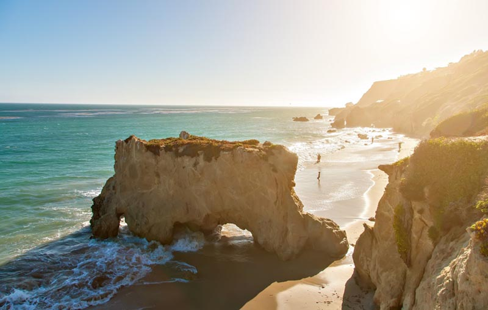

Summer - Jake

🌞 Summer ROCKS the best
- Longer days and shorter nights. We should enjoy as much sunshine as possible!
- Time for relaxing vacations and travel. I love the summer sea especially in California or Greece.
- Outdoor activities like swimming and hiking (though I can't swim!)
- It's the perfect time for beach trips, barbecues, and enjoying the great outdoors!
👑Why it is the KING👑
over other seasons
- I don't like being chilly like in the fall or even spring, and summer is the warmest season.
- Monsoon is far too wet and the cloudy skies make it gloomy. It just ruins the vacation vibe.